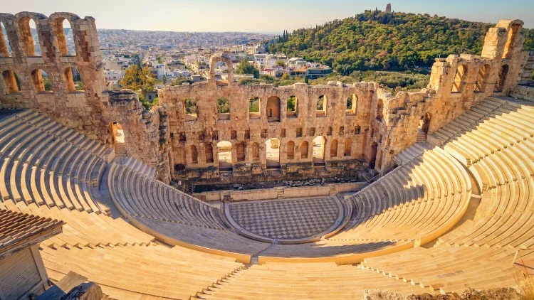

The Theater of Dionysus
Description: The Theater of Dionysus is an ancient theater located on the southern slope of the Acropolis of Athens. It is considered the birthplace of Greek drama and one of the most important theaters of antiquity.
History: The theater was originally constructed in the 5th century BC and underwent several renovations over the centuries. It was dedicated to Dionysus, the god of wine and theater. The theater hosted dramatic festivals, including the City Dionysia, which featured plays by renowned playwrights such as Aeschylus, Sophocles, and Euripides.
The Theater of Dionysus played a central role in the development of Western drama and theater, influencing dramatic structure and theatrical performance in subsequent cultures. Today, it remains a site of archaeological and cultural significance.